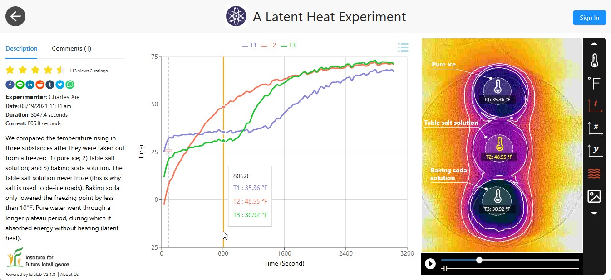

A latent-heat experiment
under a thermal camera
Pure water, salt solution, and baking-soda solution — three petri dishes revealing "hidden" heat during phase transitions.
Latent heat is energy released or absorbed by a substance during a phase transition. Such a process may exhibit constant temperature even though the substance is heated or cooled by an external source. The temperature does not change as if the heat were hidden — hence the name.
This experiment shows the comparison of temperature changes in three petri dishes containing pure water, a table-salt solution, and a baking-soda solution. These dishes were initially placed into a freezer for some time such that the water and baking-soda solution completely froze but the salt solution remained liquid. The graph clearly shows the plateaus of "constant temperature" during the melting of the two solids. The experiment was conducted for more than 50 minutes with all the data streamed by the Infrared Explorer app to the Telelab platform so it can be shared with anyone via the internet.

There are many intriguing details worth noting. First, since the thermal camera used in this experiment measures only surface temperatures, the temperatures corresponding to the plateaus were higher than the actual freezing point (32°F). This is because the surface layer started to melt when it first reached the melting point, but maintained approximately the same temperature as thermal energy was conducted inside to melt the bulk of the solid. Only after the entire solid was molten could the surface temperature start to rise.
Note that the initial surface temperatures of the three dishes appeared to be different, even though they were all taken out from the same freezer at the same time. Exactly why there were such differences is probably something interesting to investigate further.
Based on these results, we can conclude that salt is probably a better solution to keep roads from freezing than baking soda (and of course, salt is cheaper).
The experiment can be considered as an example of differential thermal analysis (DTA). The DTA technique measures the temperature difference between a sample and a reference while both are subjected to the same thermal cycles. If the sample undergoes a phase change or a chemical reaction, it will exhibit a different thermal response. In this case, the salt solution can be considered as the reference; pure water and the baking-soda solution can be considered as the sample (or vice versa).
← Back to Infrared Explorer